2022-05¶
2022-05-05¶
2022-05-05 09:13:27 |
我 |
[链接] 田志敏和王雪松的聊天记录 |
2022-05-05 09:14:40 |
你 |
嗯嗯 |
2022-05-05 12:14:21 |
你 |
你怎么样，我最近可忙了 |
2022-05-05 12:14:41 |
我 |
我最近可闲啦 |
2022-05-05 12:15:01 |
我 |
每天就是看王阳明[呲牙] |
2022-05-05 13:11:36 |
你 |
快说说看到啥了 |
2022-05-05 13:13:35 |
我 |
我最大的感觉就是世人很多时候是曲解了王阳明的 |
2022-05-05 13:13:52 |
我 |
或者说是按照他们自己的想法去解释心学的 |
2022-05-05 13:14:45 |
我 |
心学其实包含两个部分，一个是哲学基础，另一个是方法论 |
2022-05-05 13:15:32 |
我 |
他的哲学基础就是所谓的良知，在这一点上王阳明只是强调良知来自于内心，但是没有说明如何辨别良知 |
2022-05-05 13:15:54 |
我 |
他的方法论其实和辩证法很相似 |
2022-05-05 13:18:51 |
我 |
在他之后无论是所谓的左派心学还是右派心学都曲解了王阳明的心学 |
2022-05-05 13:19:22 |
我 |
左派强调破，而右派就又回到了儒家的那一套上面去了 |
2022-05-05 16:09:15 |
我 |
牟巍好像也走了 |
2022-05-05 16:10:12 |
你 |
。。。 |
2022-05-05 17:04:36 |
你 |
但是没有说明如何辨别良知—这点有说明吧 |
2022-05-05 17:04:59 |
你 |
「 王雪松: 我最大的感觉就是世人很多时候是曲解了王阳明的 」 - - - - - - - - - - - - - - - 着点我非常认可 |
2022-05-05 17:05:11 |
我 |
他的那些说明其实都不是很明确的 |
2022-05-05 17:06:47 |
我 |
或者说他没有能给出一个明确的标准 |
2022-05-05 17:07:53 |
我 |
所以别人很难去明确的衡量良知，这也是导致后世对心学的很多解读是错误的 |
2022-05-05 17:09:08 |
你 |
给出一个明确的标准—我的理解是没有标准，一说就错 |
2022-05-05 17:09:24 |
你 |
比如仁，仁的标准是啥 |
2022-05-05 17:09:59 |
你 |
包括我上次说的人心和道心，人心是啥，道心是啥 |
2022-05-05 17:10:45 |
我 |
其实是有的，王阳明受他时代的限制没有能力给出来了 |
2022-05-05 17:11:25 |
你 |
那你说说 |
2022-05-05 17:11:34 |
你 |
我觉得就是遵从自己的内心 |
2022-05-05 17:11:42 |
你 |
以快乐幸福为标准 |
2022-05-05 17:12:52 |
我 |
这个是个人的标准 |
2022-05-05 17:13:04 |
我 |
还有社会的标准 |
2022-05-05 17:14:10 |
我 |
王阳明说的良知易变其实就是在不同的标准下良知是不一样的 |
2022-05-05 17:14:42 |
你 |
对 |
2022-05-05 17:15:18 |
我 |
所以我们问自己良知的时候一定要先明白我们遵从什么标准 |
2022-05-05 17:15:54 |
你 |
我发现的一个问题是，王阳明这套理论是有长长的逻辑的，如果我们从中间切入，就会不完整，理解起来就会非常容易跑偏 |
2022-05-05 17:16:06 |
我 |
是的 |
2022-05-05 17:16:48 |
你 |
关键点在于，断章取义的话，看上去特别像鸡汤 |
2022-05-05 17:16:58 |
你 |
所以有人就会放弃 |
2022-05-05 17:17:12 |
你 |
有人就会觉得自己理解了，其实压根就没理解 |
2022-05-05 17:17:26 |
我 |
没错 |
2022-05-05 17:18:14 |
你 |
再加上理解后还需要很勤奋的锻炼，这个门槛就更高了 |
2022-05-05 17:18:21 |
你 |
所以很多人不懂心学 |
2022-05-05 17:18:29 |
你 |
但很多人又觉得自己懂了 |
2022-05-05 17:18:37 |
我 |
其实也可以反过来看心学 |
2022-05-05 17:19:05 |
我 |
就是你有什么样的认知就可以达到什么样的水平 |
2022-05-05 17:19:42 |
你 |
我觉得那些自认为懂心学的，其实不懂的，就不能说知道心学 |
2022-05-05 17:20:01 |
你 |
就像谁都可以说两句佛语，但跟佛压根无关 |
2022-05-05 17:20:08 |
我 |
是的 |
2022-05-05 17:20:40 |
你 |
这是我发现心学学不成的几类人 |
2022-05-05 17:20:56 |
我 |
但是很多不懂的人却坚信自己懂了[捂脸] |
2022-05-05 17:21:09 |
你 |
对 |
2022-05-05 17:22:22 |
我 |
当你能看见不懂的人以为自己懂了，你的认知就高了一层 |
2022-05-05 17:23:05 |
我 |
当你能理解不懂的人以为自己懂了，你的认知就又高了一层 |
2022-05-05 17:23:48 |
我 |
我猜心学对你来说有用的就是他的方法论 |
2022-05-05 17:29:35 |
你 |
「 王雪松: 我猜心学对你来说有用的就是他的方法论 」 - - - - - - - - - - - - - - - 为什么这么说 |
2022-05-05 17:33:16 |
我 |
他的哲学观基本上还是基于儒家的哲学观，这些部分我以前给你讲过很多次，你自己应该已经有了一个比较完备的认识了 |
2022-05-05 17:33:41 |
我 |
你没有掌握的是方法论，因为我的方法论不适用你 |
2022-05-05 17:34:48 |
我 |
心学这套方法论我也用，只是我是先找到根本的道之后才用这套方法论 |
2022-05-05 17:35:12 |
我 |
所以在我这里这套方法论不是最高级的 |
2022-05-05 17:35:22 |
我 |
我用的更多的还是辩证法 |
2022-05-05 17:36:01 |
我 |
心学里面的方法论可以看成朴素的辩证法 |
2022-05-05 18:51:45 |
你 |
明天再聊 |
2022-05-05 18:51:59 |
我 |
好 |
2022-05-06¶
2022-05-06 08:54:20 |
你 |
「 王雪松: 所以别人很难去明确的衡量良知，这也是导致后世对心学的很多解读是错误的 」 - - - - - - - - - - - - - - - 我的理解是，良知在我心中，没有绝对的对错，也没有标准，所以没法直接说良知是什么，也许你认为的恶确实我认为的善，只要遵从自己的内心，就是良知。有一个前提是，必须真知，很多人在不真知的情况下，以为自己知，把本不是良知的当成良知，那就是曲解了。 |
2022-05-06 08:56:26 |
我 |
是的 |
2022-05-06 08:58:22 |
我 |
所以核心还是要知道真知 |
2022-05-06 08:58:31 |
你 |
对 |
2022-05-06 08:58:43 |
我 |
如何知道真知才是最重要的课题 |
2022-05-06 08:59:28 |
你 |
对 |
2022-05-06 08:59:58 |
你 |
这么看，还是得以自己的幸福快乐为基石 |
2022-05-06 09:01:27 |
我 |
是的，这个是基础，是道 |
2022-05-06 09:04:44 |
你 |
能以这个为基础，良知基本不会偏离 |
2022-05-06 09:04:47 |
你 |
但也不绝对 |
2022-05-06 09:04:58 |
你 |
毕竟不知道自己要什么的人，大有人在 |
2022-05-06 09:07:32 |
我 |
不是偏离的问题，是层次的问题 |
2022-05-06 09:08:07 |
我 |
比如对于短期利益和长期利益的矛盾 |
2022-05-06 09:08:51 |
你 |
对对 |
2022-05-06 12:40:01 |
我 |
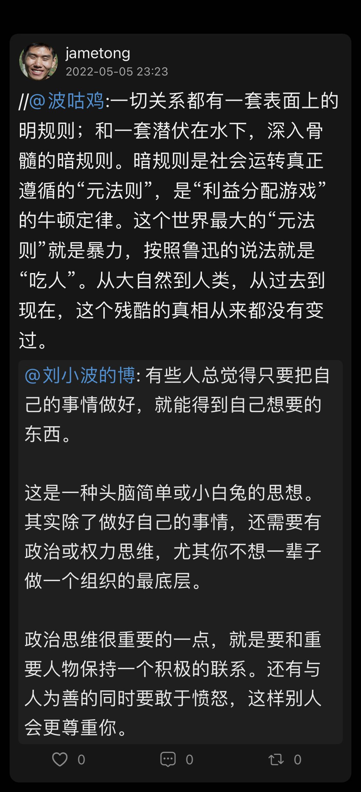 |
2022-05-06 13:16:43 |
你 |
[强] |
2022-05-06 13:18:49 |
你 |
我现在越来越觉得，事情的成败，不是靠谁就能决定的，只能是尽人事，听天命 |
2022-05-06 13:18:54 |
我 |
其实搞清楚这些规则也算是致良知的一部分 |
2022-05-06 13:19:01 |
你 |
是 |
2022-05-06 13:19:22 |
你 |
心学在不同领域的延伸是很庞大的 |
2022-05-06 13:19:41 |
我 |
嗯嗯 |
2022-05-06 13:19:51 |
你 |
王阳明也做不到完全都延伸出去，还得靠不同领域的专家，结合心学的理论 |
2022-05-06 13:20:30 |
你 |
为什么是暴力呢？ |
2022-05-06 13:20:37 |
我 |
我这一辈子就是在识别、学习、运用这些规则 |
2022-05-06 13:21:03 |
我 |
暴力是最最最终的规则 |
2022-05-06 13:21:47 |
你 |
嗯嗯 |
2022-05-06 13:21:53 |
我 |
如果一方对另一方有不受约束的暴力的机会，那么一定会实施的 |
2022-05-06 13:22:10 |
你 |
嗯嗯 |
2022-05-06 13:22:20 |
我 |
只有实力相当才有谈判的机会 |
2022-05-06 13:22:30 |
你 |
是 |
2022-05-06 13:23:52 |
我 |
这里说暴力是最大的元规则有点能量守恒定律似得公理的意思 |
2022-05-06 13:24:04 |
你 |
哦哦 |
2022-05-06 13:24:10 |
我 |
其实不是，这个元规则也是一个推论 |
2022-05-06 13:24:29 |
我 |
有点类似三体里面的黑暗森林法则 |
2022-05-06 13:24:55 |
我 |
最终也是由人的动物性和社会性决定的 |
2022-05-06 13:25:00 |
你 |
黑暗森林法则，我听不懂 |
2022-05-06 13:25:04 |
你 |
哦哦 |
2022-05-06 13:25:14 |
你 |
「 王雪松: 如果一方对另一方有不受约束的暴力的机会，那么一定会实施的 」 - - - - - - - - - - - - - - - 这个点值得深思 |
2022-05-06 13:25:53 |
我 |
家暴就有这个因素 |
2022-05-06 13:25:58 |
你 |
是 |
2022-05-06 13:26:35 |
我 |
还有各种软暴力 PUA |
2022-05-06 13:30:04 |
你 |
是 |
2022-05-06 17:11:02 |
你 |
亲，我终于忙的差不多了 |
2022-05-06 17:11:10 |
你 |
聊天聊天 |
2022-05-06 17:11:19 |
我 |
好呀 |
2022-05-06 17:13:25 |
我 |
聊啥呀 |
2022-05-06 17:14:06 |
你 |
你说 |
2022-05-06 17:14:10 |
你 |
你最近咋不忙了呢 |
2022-05-06 17:14:48 |
我 |
唉，一个是我现在没那么高的心气了，另一个是研发进度太慢了 |
2022-05-06 17:15:05 |
你 |
躺平了 |
2022-05-06 17:15:38 |
我 |
对我自己来说是躺平了，我就算躺平了也比他们很多人努力[呲牙] |
2022-05-06 17:15:45 |
你 |
哈哈 |
2022-05-06 17:15:48 |
你 |
那肯定的 |
2022-05-06 17:16:34 |
我 |
对于研发，我现在也不去催他们了 |
2022-05-06 17:16:44 |
我 |
就看着他们犯错吧[捂脸] |
2022-05-06 17:16:53 |
你 |
嗯嗯 |
2022-05-06 17:16:57 |
你 |
还稳定吗 |
2022-05-06 17:17:15 |
我 |
也只有他们犯错了，才有可能有机会醒悟 |
2022-05-06 17:17:35 |
我 |
Server 这边还可以，我估计工具那边会有异动的 |
2022-05-06 17:18:35 |
我 |
我最近也一直在反省自己 |
2022-05-06 17:18:48 |
我 |
以前我是一直再不停的推动研发 |
2022-05-06 17:19:27 |
我 |
用各种方法去推动，其实离我自己的想法还差得很多 |
2022-05-06 17:20:12 |
我 |
现在我觉得还是让他们自己去发展了，能带出来的自然不需要我努力，带不出来的努力也没用 |
2022-05-06 17:20:21 |
你 |
哈哈 |
2022-05-06 17:24:14 |
我 |
我倒是觉得你最近进步挺大的 |
2022-05-06 17:24:25 |
我 |
可惜就是没有整块的时间好好聊聊 |
2022-05-06 17:28:52 |
你 |
我就是王阳明触动的我 |
2022-05-06 17:29:04 |
你 |
就像你说的，找到了匹配的方法论 |
2022-05-06 17:31:58 |
我 |
嗯嗯，所以想和你好好聊聊，看看你现在的进展 |
2022-05-06 17:32:12 |
你 |
我也是 |
2022-05-06 17:38:19 |
你 |
我进步可大了，我感觉我的逻辑也自洽了 |
2022-05-06 17:38:25 |
你 |
特别强大 |
2022-05-06 17:38:29 |
你 |
是以前都没有过的 |
2022-05-06 17:38:39 |
我 |
太好了 |
2022-05-06 17:46:59 |
你 |
我可想跟你说了 |
2022-05-06 17:47:27 |
我 |
说吧说吧，我可想听了[偷笑] |
2022-05-06 17:47:29 |
你 |
我跟周围的人说，大部分听不懂，勉强听懂的也碰撞不出来东西 |
2022-05-06 17:47:49 |
我 |
我觉得他们都没李杰的水平 |
2022-05-06 17:48:15 |
你 |
对 |
2022-05-06 17:49:51 |
我 |
这也是李杰老和你嘚瑟的原因[呲牙] |
2022-05-06 17:50:06 |
你 |
李杰现在最大的问题 就是低围自洽 |
2022-05-06 17:50:18 |
你 |
我拔出点来，自己又回去了 |
2022-05-06 17:50:30 |
我 |
因为他接触不到高维的 |
2022-05-06 17:50:41 |
你 |
而且她现在的认知，跟王阳明那套特别别扭 |
2022-05-06 17:50:43 |
我 |
而且在这个环境下，他的维度就够了 |
2022-05-06 17:50:52 |
你 |
典型的一讲就觉得自己懂了，其实并不懂 |
2022-05-06 17:51:16 |
我 |
他就是上午的说的没有搞明白以为自己明白那种 |
2022-05-06 18:09:41 |
你 |
所以我也懒得跟她说 |
2022-05-06 18:09:48 |
你 |
只能跟你说才会有火花 |
2022-05-06 18:09:57 |
我 |
是 |
2022-05-06 18:10:13 |
你 |
我试图跟我老公说，他也是，跟黑洞似的 |
2022-05-06 18:11:05 |
我 |
等你慢慢能引导他们了，他们就会和你交流了 |
2022-05-06 18:11:24 |
你 |
我现在就能引导 |
2022-05-06 18:11:31 |
你 |
我现在可厉害了 |
2022-05-06 18:11:33 |
你 |
不骗你 |
2022-05-06 18:11:38 |
我 |
👍 |
2022-05-06 18:11:46 |
你 |
我甚至都会觉得惊讶我说出来的那些话 |
2022-05-06 18:15:02 |
我 |
感觉你一直忙呀忙的，是不是经常抽空去看书呀 |
2022-05-06 18:15:15 |
你 |
是呗 |
2022-05-06 18:15:46 |
你 |
我来这边首先得熟悉产品、组织，然后得证明自己，不能总活在李杰的影子下 |
2022-05-06 18:16:21 |
我 |
嗯嗯 |
2022-05-06 18:17:02 |
你 |
所以很忙 |
2022-05-06 18:18:15 |
我 |
没事，你先忙着，等我去了咱们有的是时间聊 |
2022-05-06 18:18:45 |
你 |
嗯嗯 |
2022-05-06 18:18:51 |
你 |
我盼着这天呢 |
2022-05-06 18:19:12 |
我 |
我也盼着呢[色] |
{kind=link}
2022-05-07¶
2022-05-07 09:14:57 |
你 |
早 |
2022-05-07 09:15:06 |
你 |
我一上午特别忙 |
2022-05-07 09:15:27 |
我 |
早 |
2022-05-07 09:15:39 |
我 |
你们也是开晨会吗 |
2022-05-07 09:16:39 |
你 |
是 |
2022-05-07 15:30:35 |
我 |
自从你走了以后，产品ppt的质量断崖式下降[呲牙] |
2022-05-07 15:30:52 |
你 |
哈哈 |
2022-05-07 15:31:53 |
你 |
让他们觉得我没价值 |
2022-05-07 15:31:56 |
你 |
哼 |
2022-05-07 15:32:27 |
我 |
他们都是有眼无珠 |
2022-05-07 15:32:52 |
你 |
对 |
2022-05-07 15:33:11 |
你 |
牟魏为啥走了？ |
2022-05-07 15:33:31 |
我 |
不知道，没联系他 |
2022-05-07 15:33:40 |
你 |
谁接的他？ |
2022-05-07 15:33:56 |
你 |
崔叔现在也不咋管你们吧 |
2022-05-07 15:34:05 |
我 |
听小道消息，说他在外面开关联公司 |
2022-05-07 15:34:13 |
你 |
哈哈 |
2022-05-07 15:34:21 |
你 |
不开公司都活不了 |
2022-05-07 15:34:46 |
我 |
崔叔压根就不管版本，现在都是我在推动呢[捂脸] |
2022-05-09¶
2022-05-09 12:49:26 |
我 |
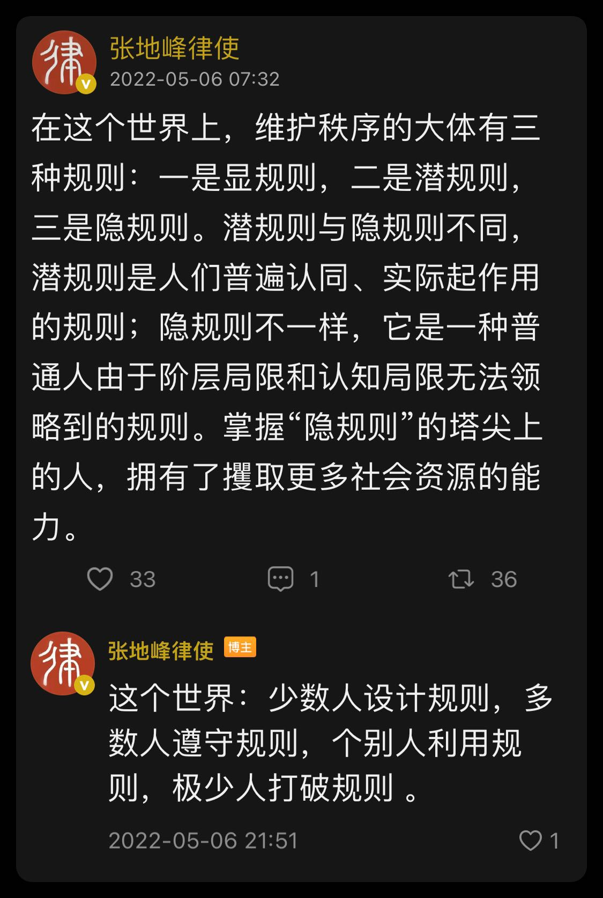 |
2022-05-09 13:33:16 |
你 |
嗯嗯 |
2022-05-09 14:23:40 |
你 |
你记得我跟你说过我们这边有个三年的产品吗 |
2022-05-09 14:23:56 |
你 |
我提成正职后，他提的副职 |
2022-05-09 14:23:59 |
你 |
他提离职了 |
2022-05-09 14:24:17 |
我 |
哦 |
2022-05-09 14:30:42 |
我 |
他现在负责什么呀 |
2022-05-09 14:31:15 |
你 |
就是产品 |
2022-05-09 14:32:15 |
我 |
那就都变成你的工作了？ |
2022-05-09 14:32:56 |
你 |
他是产品团队最不好管的人，走了以后，这几个产品就都是很听话的了 |
2022-05-09 14:33:08 |
我 |
那不更好 |
2022-05-09 14:33:17 |
我 |
你也好安排工作 |
2022-05-09 14:34:05 |
你 |
是 |
2022-05-09 14:34:35 |
我 |
这样对你挺好，正好建立自己的团队 |
2022-05-09 14:35:25 |
你 |
是 |
2022-05-09 14:41:50 |
我 |
我把王阳明看完了，突然觉得好无聊呀[捂脸] |
2022-05-09 14:42:58 |
你 |
你说王阳明没给出什么是良知 |
2022-05-09 14:43:22 |
你 |
导致后来的左派、右派的歪歪 |
2022-05-09 14:43:30 |
你 |
你说说他为啥没给出来 |
2022-05-09 14:43:47 |
我 |
历史局限性和社会压力 |
2022-05-09 14:44:07 |
你 |
你应该说服你儿子看王阳明 |
2022-05-09 14:44:21 |
我 |
他不会看的，认知不到 |
2022-05-09 14:45:24 |
我 |
佛渡有缘人，其实说的就是认知到了的人，认知到了自然有缘 |
2022-05-09 14:45:36 |
你 |
确实 |
2022-05-09 14:47:58 |
你 |
那你觉得良知是什么 |
2022-05-09 14:48:49 |
我 |
简单点说，就是保护谁的利益 |
2022-05-09 14:49:34 |
我 |
人的动物性决定了人是要保护自己的利益的，而社会性决定了要保护他人的利益的 |
2022-05-09 14:49:47 |
你 |
我最开始以为是个人幸福快乐，但这个又涉及长期利益和短期利益认知 |
2022-05-09 14:50:12 |
你 |
「 王雪松: 人的动物性决定了人是要保护自己的利益的，而社会性决定了要保护他人的利益的 」 - - - - - - - - - - - - - - - 明白了 |
2022-05-09 14:51:39 |
我 |
是的，比如说家长让孩子学习，家长是保护孩子的长期利益，而孩子玩则是保护自己的短期利益 |
2022-05-09 14:51:49 |
你 |
没错 |
2022-05-09 14:52:03 |
我 |
由于孩子的认知限制他看不见长期利益，所以这个矛盾会一直存在 |
2022-05-09 14:52:08 |
你 |
认知不够的 对利益做出错误判断，最后也不会快乐 |
2022-05-09 14:53:07 |
我 |
对呀 |
2022-05-09 14:56:45 |
你 |
易华录太乱了 |
2022-05-09 14:56:59 |
你 |
我们这个事业部一群垃圾领导 |
2022-05-09 14:57:01 |
你 |
啥也不懂 |
2022-05-09 14:57:07 |
我 |
怎么个乱法 |
2022-05-09 14:57:43 |
你 |
职责乱，管理乱，项目乱 |
2022-05-09 14:57:49 |
你 |
一点章法都没有 |
2022-05-09 14:58:34 |
我 |
其实这才是大多数企业的情况[偷笑] |
2022-05-09 14:59:01 |
我 |
现在这边的产品部也是一样的乱 |
2022-05-09 15:05:39 |
你 |
老是让我们干不该干的活 |
2022-05-09 15:06:29 |
我 |
唉[捂脸] |
2022-05-09 15:07:39 |
我 |
不过反过来说也不是一件坏事 |
2022-05-09 15:09:24 |
我 |
说起来本质上这就是一个公司组织的问题，如何提高组织的活力，降低组织内部的阻力，让大家都能像一台精密的机器运行，这些就是管理的核心 |
2022-05-09 19:14:07 |
你 |
[电话] |
{kind=link}
2022-05-10¶
2022-05-10 09:08:31 |
我 |
早 |
2022-05-10 09:09:09 |
你 |
早 |
2022-05-10 09:09:51 |
你 |
我仔细思考了一下你昨天说的 |
2022-05-10 09:09:58 |
你 |
我好像确实做的不到位 |
2022-05-10 09:11:03 |
你 |
应该是思考事情怎么做，然后跟领导说自己的想法，与领导交换，一来能让领导放心，二来可以知道领导是怎么想的 |
2022-05-10 09:11:16 |
我 |
嗯嗯 |
2022-05-10 09:12:07 |
我 |
你说的这个是从做事的角度，我还有另一个做人的角度 |
2022-05-10 09:12:26 |
我 |
所谓做人其实就是良知 |
2022-05-10 09:12:50 |
我 |
简单点说就是去找到和朋的良知，然后激发他这个良知 |
2022-05-10 09:13:15 |
你 |
找到他的良知？激发他的良知？ |
2022-05-10 09:13:17 |
你 |
不懂 |
2022-05-10 09:13:35 |
我 |
我昨天问你他不放权的原因是因为他贪恋权力还是担心事情做不好 |
2022-05-10 09:13:57 |
我 |
如果是贪恋权力，那么他就没有良知 |
2022-05-10 09:14:10 |
我 |
如果是担心事情做不好，那么这个就是他的良知 |
2022-05-10 09:14:30 |
你 |
嗯嗯 |
2022-05-10 09:14:32 |
我 |
你就是要向他证明你能做好，这就是激发他的良知 |
2022-05-10 09:14:49 |
你 |
是 |
2022-05-10 09:15:07 |
我 |
这个第一层次的东西 |
2022-05-10 09:15:18 |
我 |
然后再具体一点 |
2022-05-10 09:15:37 |
我 |
他担心事情做不好，其实也是分成好几部分的 |
2022-05-10 09:15:46 |
你 |
嗯嗯 |
2022-05-10 09:15:53 |
我 |
首先就是规划不好，然后是执行不好，最后是结果不好 |
2022-05-10 09:16:29 |
我 |
我让你在做之前和他沟通，讲你的想法就是针对他担心规划不好这个点 |
2022-05-10 09:17:01 |
我 |
而你在执行过程中不停的给他汇报就是针对执行不好这个点 |
2022-05-10 09:17:50 |
我 |
前两个做好了，结果就是水到渠成的事情了，除非有黑天鹅或者一开始的战略就错误 |
2022-05-10 09:18:57 |
你 |
嗯嗯 |
2022-05-10 09:18:59 |
你 |
了解了 |
2022-05-10 09:19:12 |
我 |
我体会王阳明的良知应该是包含了人性和心理学的东西在里面，不过他没说清楚 |
2022-05-10 09:40:13 |
你 |
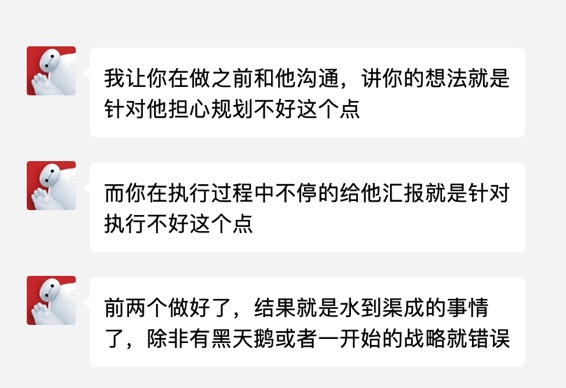 |
2022-05-10 09:40:26 |
你 |
这个我得实践一下 |
2022-05-10 09:41:11 |
我 |
嗯 |
2022-05-10 10:05:59 |
你 |
这个能展开点说说吗 |
2022-05-10 10:06:24 |
我 |
你看过王阳明剿匪那部分吧 |
2022-05-10 10:07:02 |
我 |
他讲到了要去激发对方的良知 |
2022-05-10 10:07:22 |
你 |
嗯嗯 |
2022-05-10 10:07:34 |
我 |
我感觉这个过程就是要去体会对方是怎么想的，对方的关注点是什么 |
2022-05-10 10:07:57 |
我 |
这就是要去体会对方的人性 |
2022-05-10 10:07:57 |
你 |
你看的深刻，我没想过这部分 |
2022-05-10 10:08:03 |
你 |
对 |
2022-05-10 10:08:28 |
你 |
体会对方的人性，不断找寻对方做事的原因 |
2022-05-10 10:08:36 |
我 |
没准 |
2022-05-10 10:08:44 |
你 |
这跟我对付和朋是一个道理 |
2022-05-10 10:08:50 |
我 |
没错 |
2022-05-10 10:09:07 |
我 |
这是对付所有人的道理 |
2022-05-10 10:09:20 |
我 |
比如说李杰的婆婆、张道山等等 |
2022-05-10 10:10:07 |
你 |
是 |
2022-05-10 10:11:38 |
你 |
我现在回想我根本没怎么主动出招对付李杰婆婆，大部分时间都停留在不生气阶段 |
2022-05-10 10:11:58 |
你 |
就是不生气，心不动已经耗费了我很多精力 |
2022-05-10 10:12:13 |
我 |
是的，你这个是先学不生气[呲牙] |
2022-05-10 10:12:25 |
你 |
先学不生气 |
2022-05-10 10:13:21 |
你 |
我发现不生气，不动心，就会看到更本质的东西，我起初只满足于此，看来这还有道道 |
2022-05-10 10:13:36 |
我 |
[动画表情] |
2022-05-10 13:34:18 |
你 |
有空吗 |
2022-05-10 13:34:22 |
你 |
打电话咨询个事 |
2022-05-10 13:34:40 |
我 |
有 |
2022-05-10 13:36:37 |
你 |
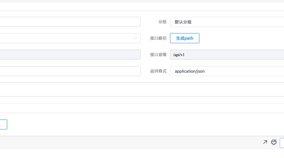 |
2022-05-10 13:37:38 |
你 |
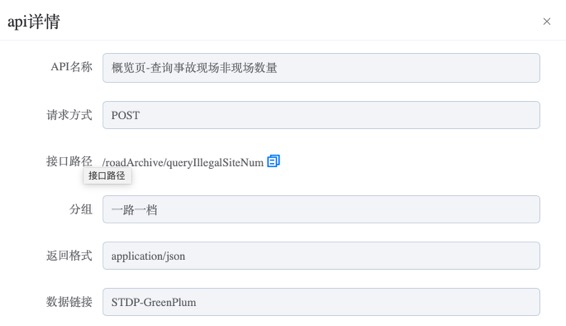 |
2022-05-10 13:37:50 |
你 |
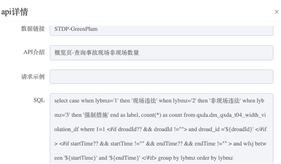 |
2022-05-10 13:38:00 |
你 |
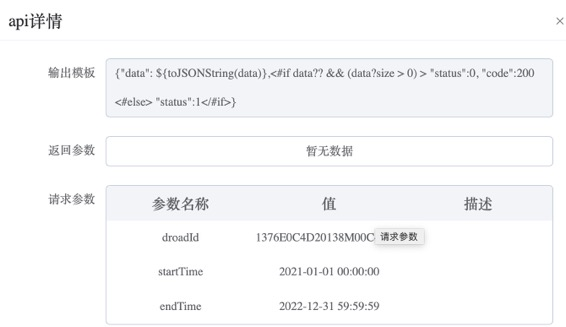 |
2022-05-10 13:44:15 |
你 |
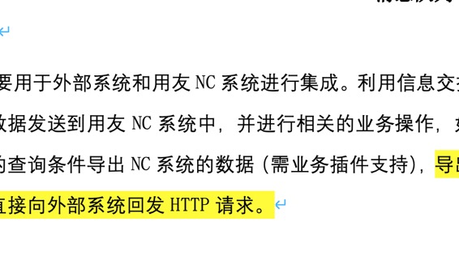 |
2022-05-10 13:44:28 |
你 |
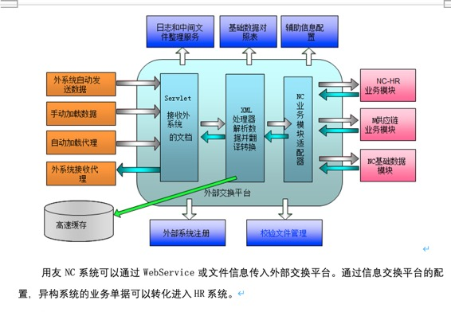 |
2022-05-10 13:49:40 |
你 |
[电话] |
2022-05-10 13:49:53 |
你 |
这个事是和朋安排我做的 |
2022-05-10 13:50:11 |
你 |
我不是很明白，跟他问了一次，也没说清楚，我就懒得再问他了 |
2022-05-10 13:50:23 |
我 |
嗯嗯 |
2022-05-10 13:50:27 |
你 |
我理解这东西基本都是标准的，没啥定制的东西 |
2022-05-10 13:50:35 |
你 |
定制的话就是具体的接口内容了 |
2022-05-10 13:50:52 |
我 |
就是怎么访问对方 |
2022-05-10 13:50:57 |
你 |
就跟原来老范他们写的servicebroker似的 |
2022-05-10 13:51:04 |
我 |
对 |
2022-05-10 13:53:40 |
你 |
系统项目技术标_系统集成.docx |
{kind=link}
{kind=link}
{kind=link}
{kind=link}
{kind=link}
{kind=link}
{kind=link}
2022-05-11¶
2022-05-11 10:18:32 |
我 |
我有一个问题没想明白，就是你们研发的工作是啥 |
2022-05-11 10:19:06 |
我 |
我感觉你们没有产品研发的工作，都是项目集成的，不知道这么理解对不对 |
2022-05-11 11:06:04 |
你 |
对 |
2022-05-11 11:06:07 |
你 |
没有产品研发 |
2022-05-11 11:06:10 |
你 |
都是项目 |
2022-05-11 11:06:13 |
你 |
没有产品 |
2022-05-11 11:07:15 |
我 |
好吧[捂脸] |
2022-05-11 11:07:24 |
你 |
产品正在定义 |
2022-05-11 13:54:07 |
我 |
[链接] 研发团队 |
2022-05-11 13:54:15 |
我 |
你看看这个 |
2022-05-11 15:14:09 |
你 |
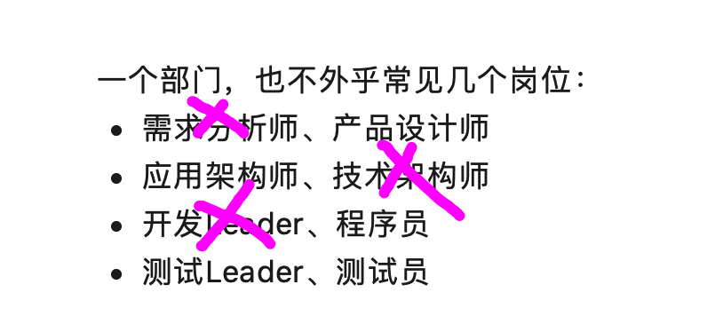 |
2022-05-11 15:14:13 |
你 |
我们这边的配置 |
2022-05-11 15:14:43 |
我 |
缺最重要的 |
2022-05-11 15:15:08 |
你 |
对 |
{kind=link}
2022-05-12¶
2022-05-12 09:14:59 |
你 |
早 |
2022-05-12 09:15:40 |
我 |
早 |
2022-05-12 09:15:53 |
我 |
我今天请假了 |
2022-05-12 09:17:47 |
你 |
为啥请假 |
2022-05-12 09:19:43 |
我 |
下雨了，不想去了[呲牙] |
2022-05-12 09:19:54 |
你 |
这么任性？ |
2022-05-12 09:20:47 |
我 |
我去了也是摸鱼，上班摸在家摸区别不大[偷笑] |
2022-05-12 09:20:57 |
你 |
这么爽 |
2022-05-12 09:23:53 |
我 |
你买了数字化转型的课？ |
2022-05-12 09:24:59 |
你 |
对 |
2022-05-12 09:25:06 |
你 |
先学习学习 |
2022-05-12 09:25:20 |
我 |
[动画表情] |
2022-05-12 09:50:56 |
你 |
你家地址在哪，我看能不能翘个班去看看你，不过我今天很忙 |
2022-05-12 09:51:23 |
我 |
太远了，河北区呢 |
2022-05-12 09:52:03 |
我 |
等哪天我翘班去你们吧 |
2022-05-12 09:52:33 |
你 |
我想跟你私会 |
2022-05-12 09:52:35 |
你 |
不带着李杰 |
2022-05-12 09:53:22 |
我 |
以后找机会吧，我家这太远了 |
2022-05-12 09:54:23 |
你 |
行 |
2022-05-12 09:54:30 |
我 |
其实你要是能翘班，来公司这边更方便，我反正也是摸鱼 |
2022-05-12 09:54:45 |
你 |
哦哦 公司那边熟人太多了 |
2022-05-12 09:55:53 |
我 |
没事，我找个地方碰不上他们 |
2022-05-12 09:56:19 |
你 |
行 |
2022-05-12 09:56:22 |
你 |
那等以后吧 |
2022-05-13¶
2022-05-13 09:57:56 |
你 |
早 |
2022-05-13 10:01:20 |
我 |
早 |
2022-05-13 16:07:58 |
我 |
忙吗 |
2022-05-13 17:48:27 |
你 |
亲，我最近太忙了 |
2022-05-13 17:48:44 |
你 |
林总安排了写商业计划书的任务，昨天我晚上十点半才回家 |
2022-05-13 17:49:18 |
我 |
啊 |
2022-05-13 18:14:42 |
你 |
我特别想你来我们团队 |
2022-05-13 18:14:52 |
你 |
到时候这些研发的破事 我都不用管了 |
2022-05-13 18:14:55 |
我 |
我也想呀 |
2022-05-13 18:15:44 |
我 |
好想好想好想 |
2022-05-13 18:21:46 |
你 |
呜呜呜 |
2022-05-13 18:21:48 |
你 |
我都要哭了 |
2022-05-13 18:22:39 |
我 |
啊，压力这么大呀 |
2022-05-13 18:27:26 |
你 |
是啊 |
2022-05-13 18:27:45 |
我 |
好心疼呀 |
2022-05-16¶
2022-05-16 10:21:43 |
你 |
早 |
2022-05-16 10:25:34 |
我 |
早 |
2022-05-16 19:45:30 |
你 |
[电话] |
2022-05-17¶
2022-05-17 18:33:45 |
你 |
[电话] |
2022-05-17 18:34:20 |
你 |
[电话] |
2022-05-17 18:47:31 |
你 |
[电话] |
2022-05-17 18:48:16 |
我 |
[电话] |
2022-05-17 18:48:42 |
你 |
|
2022-05-17 18:48:55 |
我 |
好 |
2022-05-18¶
2022-05-18 13:18:59 |
我 |
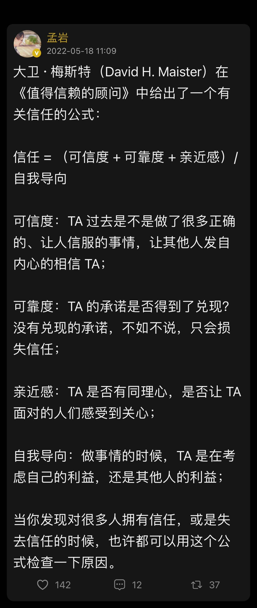 |
2022-05-18 15:54:41 |
你 |
[强] |
2022-05-18 17:29:04 |
我 |
我们明天要核酸，有可能连续三天[捂脸] |
2022-05-18 19:00:46 |
你 |
[电话] |
2022-05-18 19:01:03 |
我 |
老丁找我 |
{kind=link}
2022-05-19¶
2022-05-19 08:40:48 |
你 |
人不学而能是良能，不虑而知是良知 |
2022-05-19 08:41:45 |
我 |
嗯嗯 |
2022-05-19 08:49:56 |
我 |
不学而能 就是本能 |
2022-05-19 08:56:56 |
你 |
良知呢？ |
2022-05-19 08:58:17 |
我 |
就是最基础的道德 |
2022-05-19 15:47:33 |
你 |
居家了吗 |
2022-05-19 15:48:06 |
我 |
是的 |
2022-05-19 15:51:20 |
我 |
你还在忙商业计划书？ |
2022-05-19 15:51:31 |
你 |
不忙了 |
2022-05-19 15:51:34 |
你 |
基本完事了 |
2022-05-19 15:55:40 |
我 |
这个是你早上听的吗？ |
2022-05-19 15:57:41 |
你 |
对 |
2022-05-19 15:57:50 |
你 |
孟子说的 |
2022-05-19 15:58:10 |
我 |
嗯 |
2022-05-19 16:39:15 |
我 |
我正在看极客时间的数字化转型 |
2022-05-19 16:39:32 |
我 |
你们是怎么给企业做数字化转型的 |
2022-05-19 16:40:49 |
你 |
付晓岩的吗 |
2022-05-19 16:41:25 |
我 |
对 |
2022-05-19 16:41:50 |
我 |
业务架构设计的第三步就是业务设计了。有了战略设计，我们就知道企业的发展方向是什么，有了组织设计，我们就可以去识别每个部门、每个岗位有什么职责。这样，我们就可以着手去设计企业的业务了。简单来说，业务设计就是把企业的业务流程和涉及的数据规范地梳理出来。一般这会包括两个阶段，首先梳理现状模型，也就是业务当前什么样，之后就是第二段，把战略导入进来，看看要怎么调整现状业务，这就产生了目标模型，最后我们要用来落地战略的就是目标模型。 |
2022-05-19 16:42:18 |
我 |
你们是给每个企业都这么做吗？ |
2022-05-19 16:42:30 |
你 |
不是 |
2022-05-19 16:43:44 |
我 |
你们部门也不负责中台吧 |
2022-05-19 16:43:52 |
你 |
现在负责 |
2022-05-19 16:44:04 |
我 |
你们负责研发中台吗？ |
2022-05-19 16:45:18 |
你 |
不负责 |
2022-05-19 16:48:27 |
我 |
你们是用中台组建一个数字化的解决方案还是用中台去做项目？ |
2022-05-19 17:15:38 |
你 |
这边的项目都是方案级别，几乎不会卖单独的产品，都是一个复杂的方案 |
2022-05-19 17:15:50 |
你 |
中台工具是李杰他们的 |
2022-05-19 17:15:59 |
你 |
我们做数据应用 |
2022-05-19 17:16:02 |
你 |
以及数据内容 |
2022-05-19 17:16:10 |
我 |
哦 |
2022-05-19 18:03:54 |
我 |
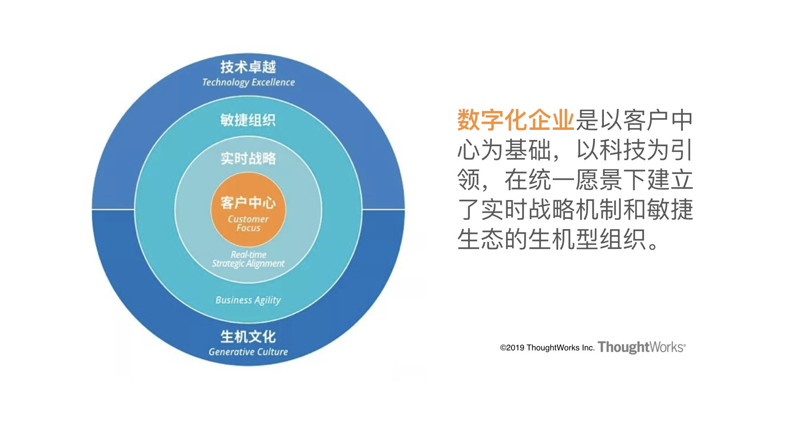 |
2022-05-19 18:13:37 |
我 |
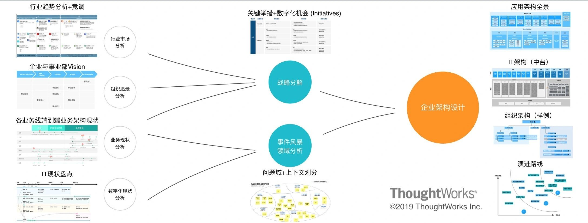 |
{kind=link}
{kind=link}
2022-05-20¶
2022-05-20 08:29:27 |
你 |
|
2022-05-20 08:29:59 |
我 |
我今天继续做核酸[捂脸] |
2022-05-20 15:01:08 |
我 |
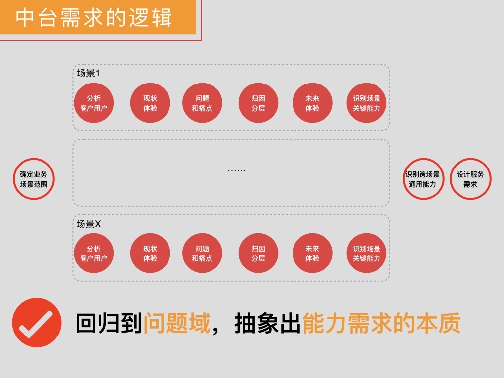 |
2022-05-20 15:03:57 |
我 |
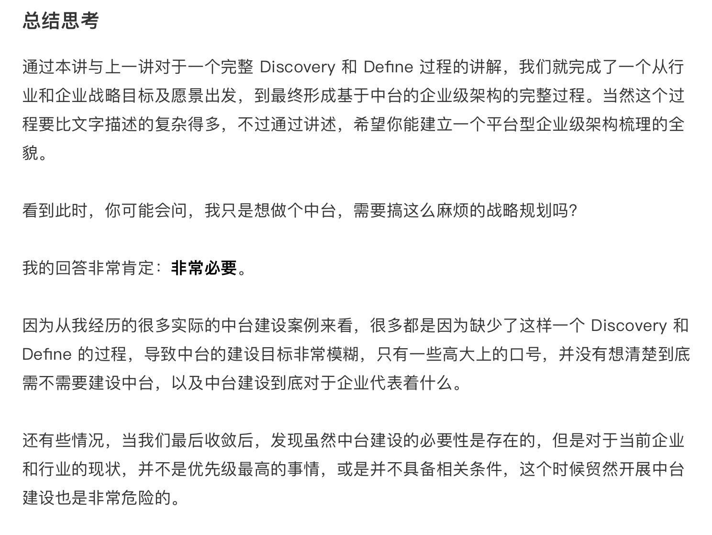 |
2022-05-20 15:05:05 |
你 |
我今天找时间跟你聊聊这部分 |
2022-05-20 15:05:07 |
我 |
我最近一直在研究数字化转型，感觉你们的困难很大呀[捂脸] |
2022-05-20 15:05:12 |
你 |
就是很大 |
2022-05-20 15:05:26 |
我 |
好的 |
2022-05-20 16:47:57 |
你 |
我自己买的这支笔很难用 |
2022-05-20 16:48:07 |
你 |
我想让你给我买只新的 |
2022-05-20 16:48:22 |
我 |
好的 |
2022-05-20 16:48:30 |
我 |
还是凌美吗？ |
2022-05-20 16:48:31 |
你 |
我又换回你给我的这支来了 |
2022-05-20 16:48:40 |
你 |
是 |
2022-05-20 16:48:54 |
你 |
我想让你给我买，因为我每天都用，拿起来就会想起你 |
2022-05-20 16:49:30 |
我 |
[动画表情] |
2022-05-20 16:49:32 |
你 |
带给我无上的灵感 |
2022-05-20 17:04:32 |
你 |
http://123.124.153.202:5080/zentaopms/www/index.php?m=user&f=reset |
2022-05-20 17:06:10 |
我 |
？ |
2022-05-20 17:09:07 |
我 |
挑个颜色吧 |
2022-05-20 17:09:14 |
我 |
|
2022-05-20 17:09:17 |
我 |
粉色 |
2022-05-20 17:09:25 |
我 |
|
2022-05-20 17:09:30 |
我 |
红色 |
2022-05-20 17:09:36 |
我 |
|
2022-05-20 17:09:43 |
我 |
磨砂黑 |
2022-05-20 17:10:02 |
我 |
原来的是磨砂黑 |
2022-05-20 17:14:14 |
你 |
还要黑色的 |
2022-05-20 17:14:45 |
我 |
好的，收货地址 |
2022-05-20 17:15:26 |
你 |
谢谢亲爱的，就当我今年生日礼物吧 |
2022-05-20 17:15:34 |
你 |
所在地区: 天津天津市津南区八里台镇 详细地址: be众创空间 |
2022-05-20 17:16:18 |
你 |
其实我自己又买了一只 |
2022-05-20 17:16:29 |
你 |
但我总觉得你如你买的好 |
2022-05-20 17:16:37 |
我 |
😄 |
2022-05-20 17:16:52 |
你 |
刚才那个链接你能打开吗 |
2022-05-20 17:17:11 |
我 |
打开了是重置密码的 |
2022-05-20 17:21:01 |
你 |
https://sweethui.github.io/sweet/2020-07.html#id2 |
2022-05-20 17:22:01 |
我 |
😄 |
2022-05-20 17:23:17 |
你 |
你看看嘛 |
2022-05-20 17:25:57 |
我 |
看了 |
2022-05-20 17:31:19 |
你 |
看完了？ |
2022-05-20 17:32:12 |
你 |
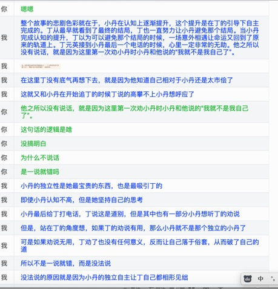 |
2022-05-20 17:33:12 |
我 |
嗯嗯 |
2022-05-20 17:34:24 |
你 |
你咋这么心不在焉呢 |
2022-05-20 17:34:34 |
你 |
我这内心澎湃的不行 |
2022-05-20 17:35:03 |
我 |
没有呀，我知道你会激动的 |
2022-05-20 17:35:50 |
我 |
你现在觉得自己和小丹一样吧 |
2022-05-20 17:39:04 |
你 |
也不是 |
2022-05-20 17:39:27 |
我 |
怎么讲 |
2022-05-20 17:40:24 |
你 |
我激动的原因的是 ：1）了解了你当时就有这么高的认知了 2）我懂了你的这些话 |
2022-05-20 17:40:55 |
你 |
唉，你得认知比我真的高太多了，以后你说的每句话我都得好好想想 |
2022-05-20 17:41:16 |
我 |
[呲牙] |
2022-05-20 17:45:12 |
你 |
电话方便吗 |
2022-05-20 17:45:57 |
我 |
行 |
2022-05-20 18:59:37 |
你 |
[电话] |
2022-05-20 19:32:26 |
你 |
[电话] |
{kind=link}
{kind=link}
{kind=link}
{kind=link}
{kind=link}
{kind=link}
2022-05-23¶
2022-05-23 09:08:00 |
你 |
我大概了解一点你说的因果了 |
2022-05-23 09:08:17 |
你 |
今天去单位还是继续居家办公 |
2022-05-23 09:08:41 |
我 |
居家办公 |
2022-05-23 09:09:44 |
我 |
我估计得居家一周了[捂脸] |
2022-05-23 09:09:56 |
我 |
我们算管控区 |
2022-05-23 09:10:02 |
你 |
原来你跟我说因果的时候，我总有种逻辑论的感觉，好像一直说因为这个因，得到那个果 |
2022-05-23 09:10:12 |
你 |
嗯嗯，注意防护 |
2022-05-23 09:10:19 |
你 |
居家办公挺好的 |
2022-05-23 09:10:27 |
你 |
不用来回通勤 |
2022-05-23 09:10:32 |
我 |
是 |
2022-05-23 09:11:03 |
你 |
周末的时候，我思考了一下，因果是更高维度的认知理论 |
2022-05-23 09:11:56 |
你 |
比知行合一，心学等都高纬 |
2022-05-23 09:12:01 |
我 |
是 |
2022-05-23 09:12:28 |
你 |
我还没跟你说，它高维的原因呢 |
2022-05-23 09:12:49 |
你 |
等我一会 |
2022-05-23 09:18:22 |
你 |
我现在还不能说特别清楚 |
2022-05-23 09:19:05 |
你 |
看透因果的人，看到恶行，就不会立马想怼回去 |
2022-05-23 09:19:21 |
你 |
这是我了解因果最开始的场景 |
2022-05-23 09:19:49 |
我 |
是 |
2022-05-23 09:20:11 |
我 |
万事皆有因 |
2022-05-23 09:20:21 |
你 |
恶行是因，它必然会有果 |
2022-05-23 09:20:28 |
你 |
万事皆有果 |
2022-05-23 09:21:31 |
你 |
如果我强行干预，如果方式方法不对，或者认知不够，反倒会让『阻止恶行』这件事，给我自己种下恶因 |
2022-05-23 09:21:51 |
我 |
是的 |
2022-05-23 09:22:24 |
我 |
只有先找到因，然后再想办法破因 |
2022-05-23 09:37:58 |
我 |
笔收到了吗 |
2022-05-23 09:38:12 |
我 |
我看签收了 |
2022-05-23 09:38:14 |
你 |
拿到了「 |
2022-05-23 09:38:20 |
你 |
刚拿到」 |
2022-05-23 09:38:30 |
我 |
嗯 |
2022-05-23 09:40:56 |
你 |
刘立功给我们开会呢 |
2022-05-23 09:41:20 |
我 |
嗯，你先开会，不着急 |
2022-05-23 13:46:32 |
你 |
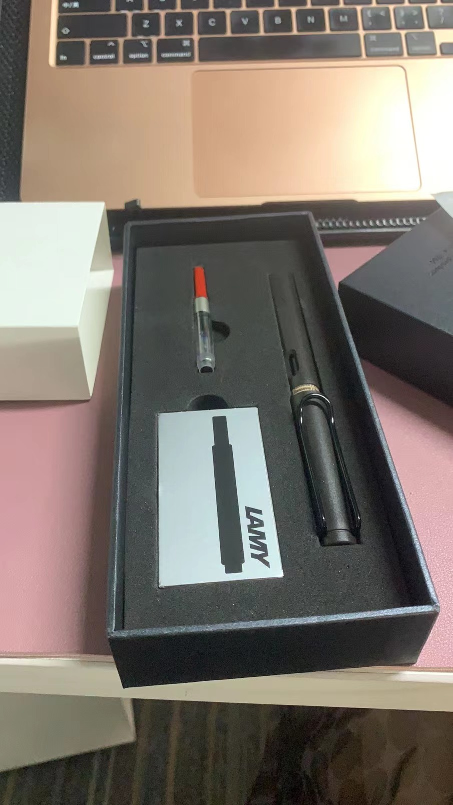 |
2022-05-23 13:46:52 |
我 |
😁 |
2022-05-23 13:46:58 |
我 |
快试试，好用不 |
2022-05-23 13:47:22 |
你 |
但是是磨砂面的[流泪] |
2022-05-23 13:55:13 |
你 |
有不是磨砂面的吗？ |
2022-05-23 13:56:24 |
我 |
有，亮黑色的 |
2022-05-23 13:56:33 |
你 |
能换一下吗 |
2022-05-23 13:56:37 |
你 |
我不喜欢这个 |
2022-05-23 13:56:44 |
你 |
我给退回去 |
2022-05-23 13:56:52 |
你 |
[呲牙] |
2022-05-23 13:57:07 |
我 |
我再给你买一个吧，把这个给李杰[偷笑] |
2022-05-23 13:57:23 |
你 |
你是嫌麻烦吗 |
2022-05-23 13:58:08 |
你 |
你要是嫌麻烦就别换了，也不需要买了 |
2022-05-23 14:01:33 |
我 |
不用，我给你买个新的，正好再买两盒墨胆，昨天忘了[捂脸] |
2022-05-23 14:01:43 |
我 |
你看看是不是黑色的墨胆 |
2022-05-23 14:02:27 |
你 |
这笔也不便宜，别买了，换一只就行 |
2022-05-23 14:02:29 |
你 |
李杰有了 |
2022-05-23 14:02:34 |
你 |
我给她买的 |
2022-05-23 14:04:17 |
我 |
嗯 |
2022-05-23 14:04:26 |
你 |
你把地址给我，我给退回去 |
2022-05-23 14:04:44 |
你 |
换个亮面的，亮面跟以前的一样 |
2022-05-23 14:04:46 |
我 |
我先给你买亮黑的，然后再退货 |
2022-05-23 14:05:01 |
你 |
你看下笔尖，有EF的 |
2022-05-23 14:05:05 |
你 |
买EF的 |
2022-05-23 14:05:13 |
我 |
好 |
2022-05-23 14:05:13 |
你 |
F的比较粗 |
2022-05-23 14:05:45 |
你 |
你记得把地址给我 |
2022-05-23 14:28:42 |
我 |
:st:`退货注意：申请为退货退款 原因为：多拍错拍不想要 或者 其他
请写张字条 写上您的交易订单号和淘宝的ID号 方便找到您的订单和与您联系` |
2022-05-23 14:30:10 |
你 |
收到 |
2022-05-23 14:31:45 |
我 |
订单编号 2642175470203660046 |
2022-05-23 14:31:53 |
你 |
好的 |
2022-05-23 14:32:05 |
你 |
我发出去后，给你单号 |
2022-05-23 14:32:12 |
我 |
好 |
2022-05-23 14:36:46 |
我 |
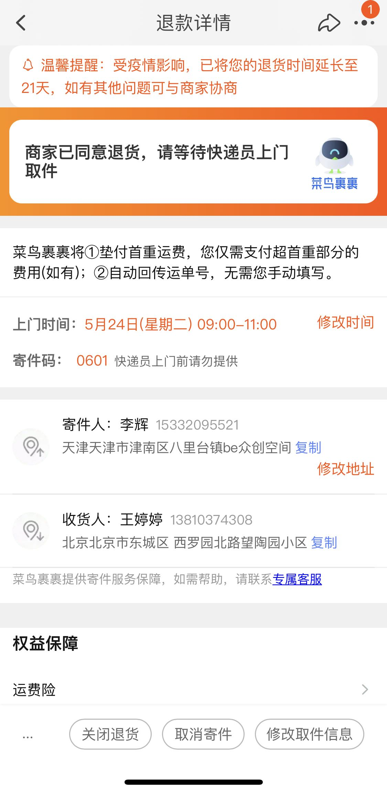 |
2022-05-23 17:04:09 |
你 |
OK |
2022-05-23 18:28:13 |
你 |
[电话] |
{kind=link}
{kind=link}
2022-05-24¶
2022-05-24 08:49:01 |
你 |
[电话] |
2022-05-24 09:21:52 |
你 |
[电话] |
2022-05-24 09:21:53 |
我 |
|
2022-05-24 09:22:28 |
我 |
订单编号 2642175470203660046 |
2022-05-24 09:29:40 |
你 |
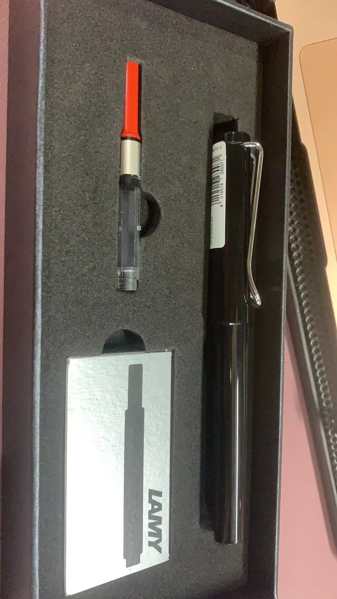 |
2022-05-24 09:29:43 |
你 |
超好用 |
2022-05-24 09:30:02 |
我 |
太好了 |
2022-05-24 13:07:33 |
你 |
|
2022-05-24 13:08:56 |
你 |
中午打了会球 |
2022-05-24 13:09:08 |
你 |
毁容式打球 |
2022-05-24 13:09:40 |
我 |
没有呀，挺漂亮的 |
2022-05-24 13:09:50 |
你 |
都是汗 |
2022-05-24 13:09:56 |
你 |
|
2022-05-24 13:10:10 |
你 |
妆花了 |
2022-05-24 13:12:16 |
我 |
我觉得比以前漂亮了 |
2022-05-24 13:33:20 |
你 |
我们啥时候也能居家 |
2022-05-24 13:33:49 |
你 |
还是有点胖 |
2022-05-24 13:33:56 |
你 |
体重没降下来 |
2022-05-24 13:34:14 |
我 |
慢慢来 |
2022-05-24 13:34:29 |
你 |
嗯嗯，不着急 |
2022-05-24 14:58:27 |
你 |
亲，你记得我有一次去国网面试，面试我的那个女的，叫任东英 |
2022-05-24 14:58:47 |
我 |
记得 |
2022-05-24 14:59:01 |
你 |
我们这边有个方案，任是他原来的上司 |
2022-05-24 14:59:06 |
你 |
世界好小 |
2022-05-24 14:59:27 |
你 |
他说任 可厉害了，数洋业务的扛把子 |
2022-05-24 14:59:57 |
你 |
100多人的小公司，特别累 |
2022-05-24 15:00:34 |
我 |
嗯嗯 |
2022-05-24 16:21:50 |
你 |
mac有向日葵吗 |
2022-05-24 16:21:55 |
你 |
我需要向日葵 |
2022-05-24 16:22:16 |
我 |
没有 |
2022-05-24 16:23:39 |
我 |
https://sunlogin.oray.com/download |
2022-05-24 16:23:41 |
我 |
有了 |
2022-05-24 16:23:43 |
我 |
你试试 |
2022-05-24 16:26:53 |
你 |
可以 |
2022-05-24 16:27:04 |
我 |
好 |
2022-05-24 16:28:04 |
你 |
那你是不是可以控制我的电脑了 |
2022-05-24 16:28:47 |
我 |
你得发邀请呀 |
2022-05-24 18:33:11 |
你 |
[电话] |
2022-05-24 18:44:23 |
我 |
[电话] |
2022-05-24 18:44:38 |
我 |
[电话] |
2022-05-24 19:03:23 |
你 |
[电话] |
{kind=link}
{kind=link}
{kind=link}
{kind=link}
2022-05-25¶
2022-05-25 08:30:54 |
你 |
[电话] |
2022-05-25 08:54:27 |
你 |
[电话] |
2022-05-25 09:54:01 |
你 |
华为数据之道.pdf |
2022-05-25 09:54:11 |
你 |
你看下第4章 |
2022-05-25 09:54:28 |
我 |
好 |
2022-05-25 10:56:13 |
你 |
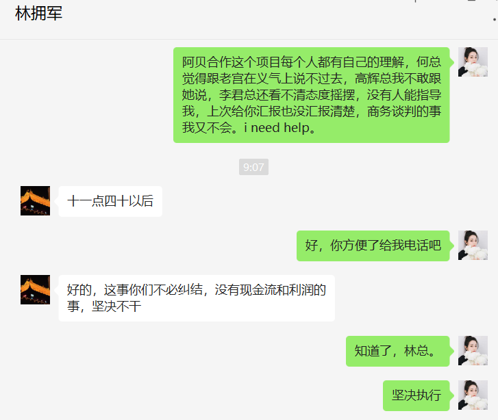 |
2022-05-25 10:56:44 |
我 |
嗯 |
2022-05-25 19:17:04 |
你 |
[电话] |
2022-05-25 19:23:11 |
我 |
[电话] |
2022-05-25 19:38:34 |
你 |
[电话] |
{kind=link}
2022-05-26¶
2022-05-26 08:55:29 |
你 |
[电话] |
2022-05-26 09:17:43 |
你 |
亲，你有时间看看华为治理之道的第4章和第5章 |
2022-05-26 09:18:01 |
我 |
嗯，我正在看呢 |
2022-05-26 14:56:08 |
我 |
每天最幸福的期待就是等着你的电话，每天最幸福的时刻就是和你聊天 |
2022-05-26 15:05:28 |
你 |
我不全是，但也差不多 |
2022-05-26 15:10:41 |
你 |
我总是想你 |
2022-05-26 15:10:50 |
你 |
思念 |
2022-05-26 15:10:54 |
我 |
我也一样 |
2022-05-26 15:11:06 |
我 |
有好多好多话想和你说 |
2022-05-26 15:49:01 |
你 |
说说呗 |
2022-05-26 15:49:13 |
你 |
我想说的，每天都说了 |
2022-05-26 15:49:39 |
我 |
你有空吗 |
2022-05-26 15:52:17 |
你 |
你说吧 |
2022-05-26 15:52:19 |
你 |
我可以看 |
2022-05-26 15:52:24 |
你 |
我也想听 |
2022-05-26 15:54:40 |
我 |
我想和你说的有：1.关于灵魂；2. 你想来我家的内在原因；3. 你和李杰的纠缠 |
2022-05-26 15:56:25 |
我 |
不过我现在有一点纠结的，就是不知道你现在的认知能力到底有多高，也不知道这些东西和你说了你能不能听懂 |
2022-05-26 15:59:44 |
我 |
先说最简单的吧，你和李杰的纠缠 |
2022-05-26 16:00:21 |
我 |
你和李杰都有一个和对方竞争的心态 |
2022-05-26 16:00:39 |
我 |
李杰比你更在意这种比较 |
2022-05-26 16:01:46 |
我 |
你俩的本质是一样的 |
2022-05-26 16:01:48 |
你 |
嗯嗯 |
2022-05-26 16:01:58 |
你 |
确实有 |
2022-05-26 16:02:19 |
我 |
你是因为我，所以没有走到她这种程度 |
2022-05-26 16:02:25 |
你 |
是 |
2022-05-26 16:03:44 |
我 |
今天早上我让你去体验的那种自省的方式，就是破解你和李杰之间问题的方法 |
2022-05-26 16:04:42 |
我 |
就是通过你自己的自省逐渐的放下你对李杰的执念 |
2022-05-26 16:05:03 |
我 |
放下执念以后你就会发现你的她的爱 |
2022-05-26 16:05:38 |
我 |
这种爱也是我当初说你俩会是灵魂伴侣的原因 |
2022-05-26 16:09:09 |
我 |
当然这个最终涉及到所谓灵魂的话题，就是我想和你说的第一个话题 |
2022-05-26 16:10:17 |
我 |
以李杰作为你的镜子，修炼你自己的心 |
2022-05-26 16:13:51 |
你 |
你接着说 |
2022-05-26 16:14:00 |
你 |
我一直再看 |
2022-05-26 16:18:16 |
我 |
李杰现在有很多问题，光是指出他的问题其实是不够的 |
2022-05-26 16:18:23 |
我 |
重要的产生这些问题的原因 |
2022-05-26 16:18:36 |
我 |
当然，你现在还不一定具备这个能力 |
2022-05-26 16:19:36 |
你 |
「 王雪松: 当然，你现在还不一定具备这个能力 」 - - - - - - - - - - - - - - - 但是我可以练 |
2022-05-26 16:19:58 |
我 |
是，就是去格 |
2022-05-26 16:20:39 |
我 |
当你看见李杰那些问题的时候，你先要做到自己没有情绪 |
2022-05-26 16:20:44 |
你 |
没错 |
2022-05-26 16:20:46 |
我 |
有情绪就是有执念 |
2022-05-26 16:20:56 |
我 |
也执念就一定错 |
2022-05-26 16:21:40 |
你 |
是 |
2022-05-26 16:21:41 |
你 |
没错 |
2022-05-26 16:22:32 |
我 |
执念不是那么容易放下的，特别是当你有一个“为她好”的念头 |
2022-05-26 16:22:59 |
我 |
最简单的放下就是放弃，就是不管，就是眼不见心不烦 |
2022-05-26 16:23:22 |
我 |
这就从左边一下子跑到右边了 |
2022-05-26 16:23:56 |
我 |
所以人生最难最难的就是走中庸之道 |
2022-05-26 16:24:59 |
我 |
一个原因是 中 太难找了，另一个就是要同时和两边做斗争 |
2022-05-26 16:25:38 |
我 |
这个过程就是对自己 心 的修炼 |
2022-05-26 16:26:40 |
我 |
只有反复不停的修炼，才能找到 中，也就是 道 |
2022-05-26 16:27:01 |
我 |
当你找到了道，后面做起来就容易了 |
2022-05-26 16:27:37 |
你 |
「 王雪松: 最简单的放下就是放弃，就是不管，就是眼不见心不烦 」 - - - - - - - - - - - - - - - 这个就是自欺欺人 |
2022-05-26 16:27:42 |
我 |
所以说 道 是在不停的修炼中找到的，这个修炼是对 心 的修炼。 |
2022-05-26 16:29:22 |
你 |
没错 |
2022-05-26 16:29:26 |
你 |
完全听得懂 |
2022-05-26 16:30:01 |
你 |
说找 中 对我来说不管用，但是先不让自己有情绪，这个对我管用 |
2022-05-26 16:30:30 |
你 |
我已经在你得帮助下，攻克了一个，有这个成功经验，我很有自信能走出来，并放下李杰 |
2022-05-26 16:31:03 |
我 |
你现在关注的还是方法，我教给你的是模型 |
2022-05-26 16:31:25 |
我 |
这个 中 就是现在要找的，我也不知道这个中在哪里 |
2022-05-26 16:32:35 |
我 |
说到这，我觉得你和李杰之间的爱要比现在深很多很多，现在的问题是你和李杰都被一些俗事给蒙蔽了眼睛 |
2022-05-26 16:34:32 |
我 |
一点一点你能看清这些俗事，你就能看清你和李杰之间的纠缠了 |
2022-05-26 16:35:50 |
我 |
我先去跑步去[呲牙] |
2022-05-26 16:38:15 |
你 |
「 王雪松: 「李辉：说找 中 对我来说不管用，但是先不让自己有情绪，这个对我管用」 - - - - - - - - - - - - - - - 这个 中 就是现在要找的，我也不知道这个中在哪里 」 - - - - - - - - - - - - - - - 中，就是良知 |
2022-05-26 16:38:39 |
你 |
「 王雪松: 一点一点你能看清这些俗事，你就能看清你和李杰之间的纠缠了 」 - - - - - - - - - - - - - - - 没错 |
2022-05-26 16:42:44 |
你 |
看清了，就只剩下爱了，没有除了爱之外的别的 |
2022-05-26 17:39:20 |
我 |
我相信你能做得到 |
2022-05-26 17:41:05 |
你 |
「 王雪松: 你现在关注的还是方法，我教给你的是模型 」 - - - - - - - - - - - - - - - 这个我明白了 |
2022-05-26 17:41:46 |
你 |
自省 省的，练心练的 都是这个中 |
2022-05-26 17:42:12 |
我 |
嗯嗯 |
2022-05-26 17:43:17 |
我 |
找到了这个中，就知道该怎么做了 |
2022-05-26 18:59:16 |
你 |
[电话] |
2022-05-27¶
2022-05-27 09:29:12 |
你 |
老王 |
2022-05-27 09:29:21 |
我 |
在 |
2022-05-27 09:30:20 |
你 |
稍等，客户的电话 |
2022-05-27 09:30:28 |
我 |
嗯，不急 |
2022-05-27 10:25:51 |
你 |
不想干活 |
2022-05-27 10:26:03 |
你 |
华松的交付后，一堆问题 |
2022-05-27 10:26:08 |
你 |
各种bug |
2022-05-27 10:26:16 |
我 |
哈哈，正常 |
2022-05-27 10:26:30 |
我 |
咱们产品交付以后也是一堆 bug[捂脸] |
2022-05-27 10:34:23 |
你 |
这边的都是很明显的错误 |
2022-05-27 10:34:48 |
我 |
唉，其实就是研发管理不行 |
2022-05-27 10:35:02 |
你 |
都没研发管理 |
2022-05-27 10:35:07 |
你 |
全程没有评审， |
2022-05-27 10:35:28 |
我 |
这样没法做产品呀，回来还不得被用户骂死 |
2022-05-27 10:35:45 |
你 |
就是项目 |
2022-05-27 10:35:58 |
你 |
全靠测试 |
2022-05-27 10:36:00 |
我 |
项目也应该有评审 |
2022-05-27 10:36:46 |
你 |
完全都是瞎整 |
2022-05-27 10:37:16 |
你 |
全靠人 |
2022-05-27 10:37:36 |
你 |
这边都没质控 |
2022-05-27 10:38:22 |
我 |
[捂脸] |
2022-05-27 10:40:44 |
我 |
说实话，李君不懂这些吗 |
2022-05-27 10:40:53 |
我 |
吉老师应该懂吧 |
2022-05-27 10:41:35 |
你 |
没聊过 |
2022-05-27 10:41:43 |
你 |
我觉得李君大概率不懂 |
2022-05-27 10:41:54 |
你 |
他以为他懂，但他不懂 |
2022-05-27 10:42:14 |
我 |
好吧 |
2022-05-27 10:42:23 |
你 |
这边数据都是数据治理人在弄，各种问题 |
2022-05-27 10:43:04 |
我 |
人治就必然是这样的 |
2022-05-27 11:08:50 |
你 |
这边都是按照项目做 |
2022-05-27 11:09:02 |
你 |
产品过程控的还可以 |
2022-05-27 11:09:25 |
我 |
那还有 bug 的原因呢 |
2022-05-27 11:10:25 |
你 |
啥意思 |
2022-05-27 11:10:57 |
你 |
我看华松这个项目，bug有一部分是比较简单的，有些是设计层面的比较严重 |
2022-05-27 11:11:48 |
我 |
就是看看这些bug，是不是通过流程可以尽早避免 |
2022-05-27 11:32:49 |
你 |
我觉得有些是可以的 |
2022-05-27 11:33:34 |
我 |
嗯嗯，那就是有改进的余地 |
2022-05-27 12:08:56 |
我 |
要不我给你去做流程吧[呲牙] |
2022-05-27 12:12:49 |
你 |
我想让你做一切 |
2022-05-27 12:13:06 |
我 |
好呀[偷笑] |
2022-05-27 13:31:45 |
你 |
老王，我又想你了 |
2022-05-27 13:31:49 |
你 |
咱们聊会天吧 |
2022-05-27 13:31:53 |
你 |
我这会不忙 |
2022-05-27 13:32:00 |
我 |
行 |
2022-05-27 13:32:10 |
你 |
接着昨天的话题 |
2022-05-27 13:33:24 |
我 |
你还记得王阳明和徐爱吧 |
2022-05-27 13:37:42 |
你 |
当然记得 |
2022-05-27 13:38:55 |
我 |
还有伯牙 钟子期的故事 |
2022-05-27 13:39:20 |
我 |
我觉得他们是一样的 |
2022-05-27 13:40:37 |
你 |
是 |
2022-05-27 13:41:25 |
我 |
核心就是灵魂一致 |
2022-05-27 13:41:48 |
我 |
那种心灵层面上的 |
2022-05-27 13:42:11 |
你 |
是 |
2022-05-27 13:42:43 |
我 |
我就联想到咱俩 |
2022-05-27 13:42:55 |
你 |
是 |
2022-05-27 13:43:05 |
你 |
我昨天做梦，你自己在家，生病了 |
2022-05-27 13:43:26 |
你 |
然后好像是王志，还有谁 离你家近，把你送医院了，我吓得一直哭 |
2022-05-27 13:44:40 |
我 |
吓坏了吧 |
2022-05-27 13:45:34 |
你 |
是 |
2022-05-27 13:45:43 |
你 |
我一直很担心你，然后一直哭 |
2022-05-27 13:46:17 |
我 |
我觉得咱俩也是灵魂层面的 |
2022-05-27 13:48:30 |
你 |
其实我不知道 |
2022-05-27 13:48:38 |
我 |
我不知道你能理解多少 |
2022-05-27 13:48:55 |
你 |
但是我内心的感觉就是我现在表达的 |
2022-05-27 13:49:03 |
我 |
你说过你感觉到过灵魂 |
2022-05-27 13:49:42 |
你 |
是从能量的角度感受的 |
2022-05-27 13:50:29 |
你 |
昨天的话题还没说完呢 |
2022-05-27 13:50:37 |
你 |
现在说灵魂呢吗 |
2022-05-27 13:51:14 |
你 |
「 王雪松: 我想和你说的有：1.关于灵魂；2. 你想来我家的内在原因；3. 你和李杰的纠缠 」 - - - - - - - - - - - - - - - 这三个 |
2022-05-27 13:51:36 |
我 |
第三个我觉得说完了[捂脸] |
2022-05-27 13:52:05 |
你 |
第三个说完了 |
2022-05-27 13:52:11 |
你 |
还有第一个和第二个呢 |
2022-05-27 13:52:19 |
你 |
第三个我现在已经完全明白了 |
2022-05-27 13:52:21 |
我 |
现在就是说第一个 |
2022-05-27 13:52:28 |
你 |
等 我自己再实验一下 |
2022-05-27 13:52:37 |
你 |
你接着说第一个 |
2022-05-27 13:53:40 |
我 |
伯牙子期 王阳明徐爱 他们收获了一种快乐 |
2022-05-27 13:55:04 |
你 |
是 |
2022-05-27 13:55:11 |
你 |
我也收获了快乐 |
2022-05-27 13:55:22 |
你 |
与快乐相比，更多的是安全感 |
2022-05-27 13:57:45 |
我 |
这种快乐是和我们平时的快乐不一样 |
2022-05-27 13:58:09 |
我 |
这就是我说的灵魂和肉体的区别点 |
2022-05-27 14:00:12 |
你 |
嗯嗯 |
2022-05-27 14:00:16 |
你 |
我开个会，稍等 |
2022-05-27 14:00:21 |
我 |
好 |
2022-05-27 15:09:15 |
你 |
刚开完了 |
2022-05-27 15:09:19 |
你 |
一会还要开 |
2022-05-27 15:09:31 |
我 |
好忙呀 |
2022-05-27 15:09:45 |
你 |
这边天天开会 |
2022-05-27 15:09:51 |
你 |
尤其是晚上7点以后 |
2022-05-27 15:09:55 |
你 |
不过我都不参加 |
2022-05-27 15:10:02 |
你 |
我没到级别 |
2022-05-27 15:10:22 |
我 |
唉，没有管理就全靠开会 |
2022-05-27 15:10:26 |
你 |
是 |
2022-05-27 15:10:29 |
你 |
这边可乱了 |
2022-05-27 15:10:39 |
你 |
没有任何东西是有标准的 |
2022-05-27 15:11:00 |
你 |
产品研发有，但产品开发都叫停了 全部都在做项目 |
2022-05-27 15:11:50 |
我 |
[捂脸] |
2022-05-27 15:12:05 |
你 |
项目开发一点标准都没有 |
2022-05-27 15:18:47 |
我 |
我去跑步 |
2022-05-27 16:16:08 |
你 |
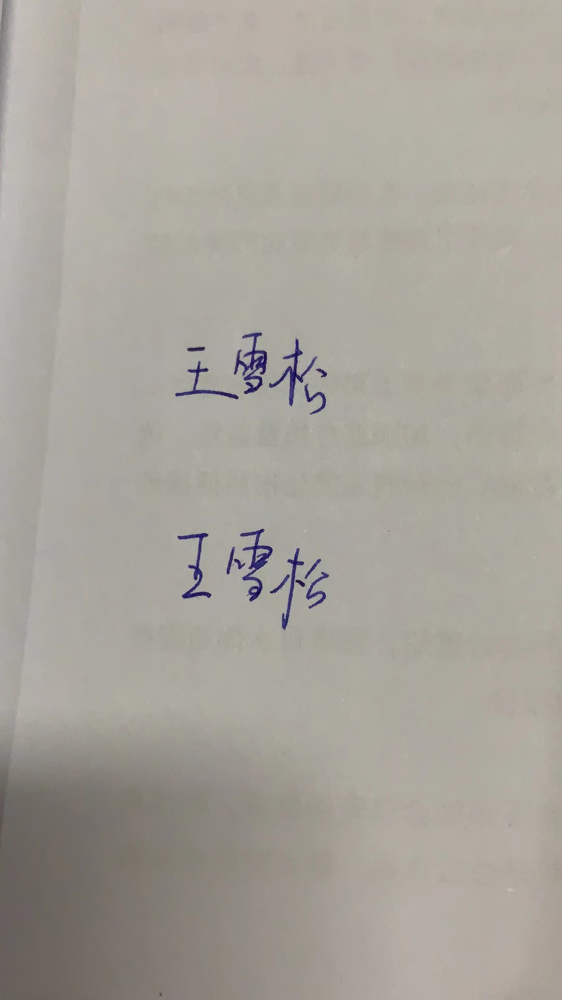 |
2022-05-27 16:16:27 |
你 |
这个笔特别好用，很细，你应该比较喜欢 |
2022-05-27 16:37:53 |
我 |
写的真漂亮 |
2022-05-27 16:48:56 |
我 |
还开会呢？ |
2022-05-27 18:14:46 |
你 |
打电话方便吗 |
2022-05-27 18:15:10 |
我 |
好 |
2022-05-27 18:15:52 |
你 |
[电话] |
2022-05-27 18:42:25 |
你 |
[电话] |
2022-05-27 18:43:47 |
我 |
[电话] |
2022-05-27 19:14:59 |
你 |
[电话] |
{kind=link}
{kind=link}